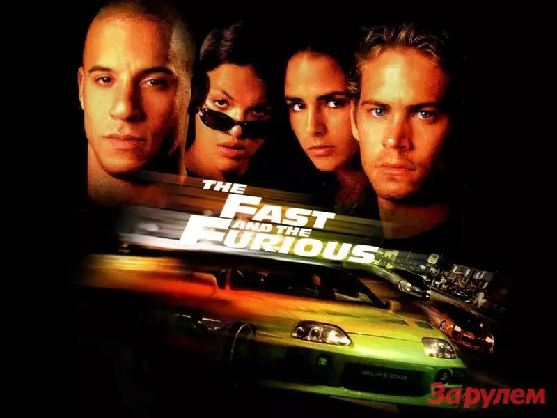

вселенная
фильмы
игры
музыка
поменять тему

музыка
Слушайте <a href='https://music.yandex.ru/album/2582759'>«Форсаж 7»</a> — <a href='https://music.yandex.ru/artist/171'>сборник</a> на Яндекс Музыке
Слушайте <a href='https://music.yandex.ru/album/3169'>The Fast And The Furious: Tokyo Drift</a> — <a href='https://music.yandex.ru/artist/171'>сборник</a> на Яндекс Музыке
Абсолютно вся музыка
здесь